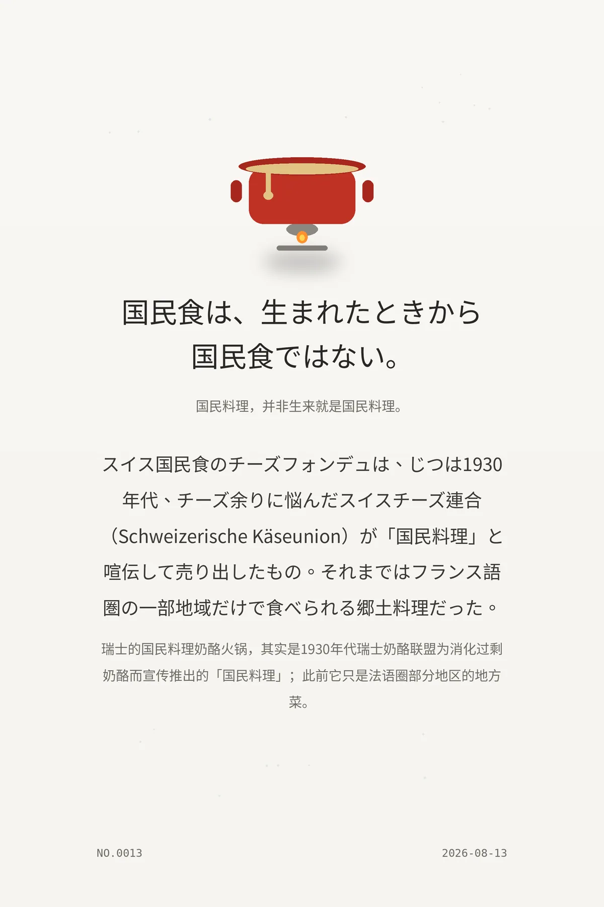

国民食は、生まれたときから国民食ではない。（国民料理，并非生来就是国民料理。）
スイス国民食のチーズフォンデュは、じつは1930年代、チーズ余りに悩んだスイスチーズ連合（Schweizerische Käseunion）が「国民料理」と喧伝して売り出したもの。それまではフランス語圏の一部地域だけで食べられる郷土料理だった。（瑞士的国民料理奶酪火锅，其实是1930年代瑞士奶酪联盟为消化过剩奶酪而宣传推出的「国民料理」；此前它只是法语圈部分地区的地方菜。）
c761c3980e8e9dad冷知识由执笔的模型自行查证。逐条断言、来源与所引原句存档在纯文字副本里，未经程序逐字校验，留作事后核实。